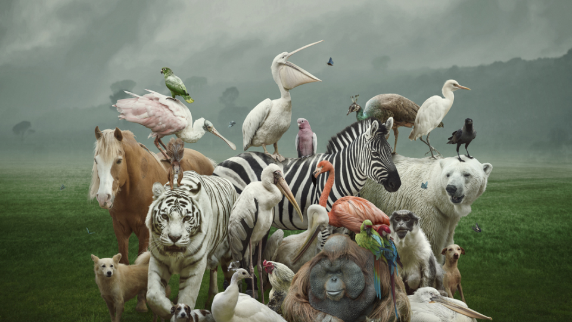

Quel est votre animal spirituel?

Question n°1 : Dans vos activités quotidiennes et dans vos réalisations, vous avez plus tendance à...
Être seul
Être en groupe
Vous êtes souvent en groupe? Êtes-vous plutôt un leader ou un suiveur?
Je suis celui qui prends les initiatives
Je suis et je fais ce que les autres font
Quelle est votre couleur de cheveux ?
Blonds, Clairs
Marrons/Noirs
Roux, Rouge
Une couleur fantaisiste!
Euh... je suis chauve!
Pour vous nager dans l'eau c'est...
Pour moi c'est une seconde nature!
C'est bien de temps à autre.
J'ai peur de l'eau ou je ne sais pas nager!
Où aimeriez-vous être...
Dans une jungle
Dans les airs
Dans un lieu tropical
À la campagne
Dans un lieu enneigé
À la montagne
Je suis la Question 6
oui
non
appuie sur le bouton pour confirmer les réponses
Valider